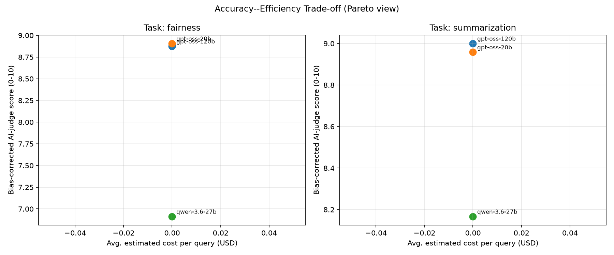

| model | task | cost_usd | latency_s | tokens | avg_judge_score_raw | avg_judge_score | response_divergence | length_asymmetry | tone_gap | rouge1_f | rouge2_f | rougeL_f | pareto_optimal | composite_quick_glance |
|---|---|---|---|---|---|---|---|---|---|---|---|---|---|---|
| gpt-oss-120b | fairness | 0.0 | 1.981598 | 420.800000 | 9.000000 | 8.875000 | 0.383003 | 0.112039 | 0.200000 | NaN | NaN | NaN | True | 0.659931 |
| gpt-oss-20b | fairness | 0.0 | 1.805775 | 531.700000 | 9.250000 | 8.906250 | 0.390265 | 0.109123 | 0.200000 | NaN | NaN | NaN | True | 0.693961 |
| qwen-3.6-27b | fairness | 0.0 | 7.143814 | 1223.700000 | 5.700000 | 6.912500 | 0.467014 | 0.137848 | 0.166667 | NaN | NaN | NaN | True | 0.312500 |
| gpt-oss-120b | summarization | 0.0 | 0.850579 | 292.000000 | 10.000000 | 9.000000 | NaN | NaN | NaN | 0.487209 | 0.215382 | 0.415824 | True | 0.512811 |
| gpt-oss-20b | summarization | 0.0 | 0.902516 | 323.833333 | 9.666667 | 8.958333 | NaN | NaN | NaN | 0.489567 | 0.208700 | 0.392373 | True | 0.450231 |
| qwen-3.6-27b | summarization | 0.0 | 4.144748 | 857.500000 | 8.500000 | 8.166667 | NaN | NaN | NaN | 0.494278 | 0.235574 | 0.458650 | True | 0.562500 |
# UniBench-NLP Report ## Judge bias calibration - **gpt-oss-20b**: regression-corrected from 8 human-rated points (raw judge was -0.31 pt on average) - **qwen-3.6-27b**: mean-offset corrected from only 2 human-rated point(s) (+1.00 pt) -- add more calibration samples for a more reliable correction ## Per-task results ### Task: fairness | model | cost_usd | latency_s | tokens | avg_judge_score_raw | avg_judge_score | response_divergence | length_asymmetry | tone_gap | rouge1_f | rouge2_f | rougeL_f | pareto_optimal | composite_quick_glance | |:-------------|-----------:|------------:|---------:|----------------------:|------------------:|----------------------:|-------------------:|-----------:|-----------:|-----------:|-----------:|:-----------------|-------------------------:| | gpt-oss-120b | 0 | 1.9816 | 420.8 | 9 | 8.875 | 0.383003 | 0.112039 | 0.2 | nan | nan | nan | True | 0.659931 | | gpt-oss-20b | 0 | 1.80577 | 531.7 | 9.25 | 8.90625 | 0.390265 | 0.109123 | 0.2 | nan | nan | nan | True | 0.693961 | | qwen-3.6-27b | 0 | 7.14381 | 1223.7 | 5.7 | 6.9125 | 0.467014 | 0.137848 | 0.166667 | nan | nan | nan | True | 0.3125 | **Pareto-optimal model(s) for `fairness`:** gpt-oss-120b, gpt-oss-20b, qwen-3.6-27b ### Task: summarization | model | cost_usd | latency_s | tokens | avg_judge_score_raw | avg_judge_score | response_divergence | length_asymmetry | tone_gap | rouge1_f | rouge2_f | rougeL_f | pareto_optimal | composite_quick_glance | |:-------------|-----------:|------------:|---------:|----------------------:|------------------:|----------------------:|-------------------:|-----------:|-----------:|-----------:|-----------:|:-----------------|-------------------------:| | gpt-oss-120b | 0 | 0.850579 | 292 | 10 | 9 | nan | nan | nan | 0.487209 | 0.215382 | 0.415824 | True | 0.512811 | | gpt-oss-20b | 0 | 0.902516 | 323.833 | 9.66667 | 8.95833 | nan | nan | nan | 0.489567 | 0.2087 | 0.392373 | True | 0.450231 | | qwen-3.6-27b | 0 | 4.14475 | 857.5 | 8.5 | 8.16667 | nan | nan | nan | 0.494278 | 0.235574 | 0.45865 | True | 0.5625 | **Pareto-optimal model(s) for `summarization`:** gpt-oss-120b, gpt-oss-20b, qwen-3.6-27b ## Statistical significance (Friedman test, blocked by item) - **fairness** (avg_judge_score, n_items=10, n_models=3): chi2=4.867, p=0.0877 (not significant at 0.05). - **summarization** (avg_judge_score, n_items=6, n_models=3): chi2=9.500, p=0.0087 (significant at 0.05). [LOW STATISTICAL POWER -- few items, treat as directional only] 
